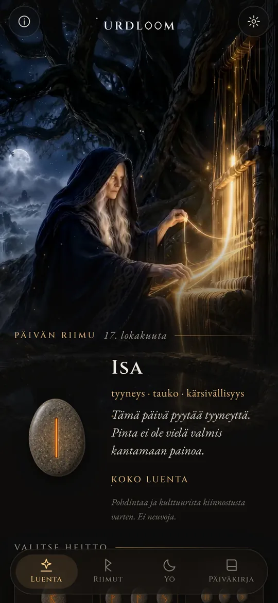
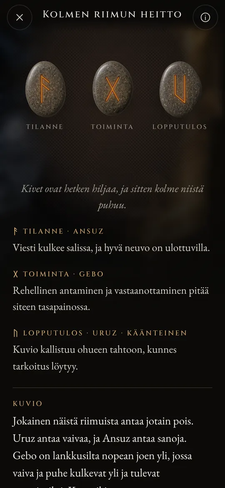
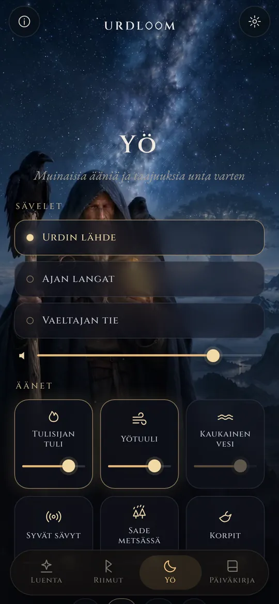
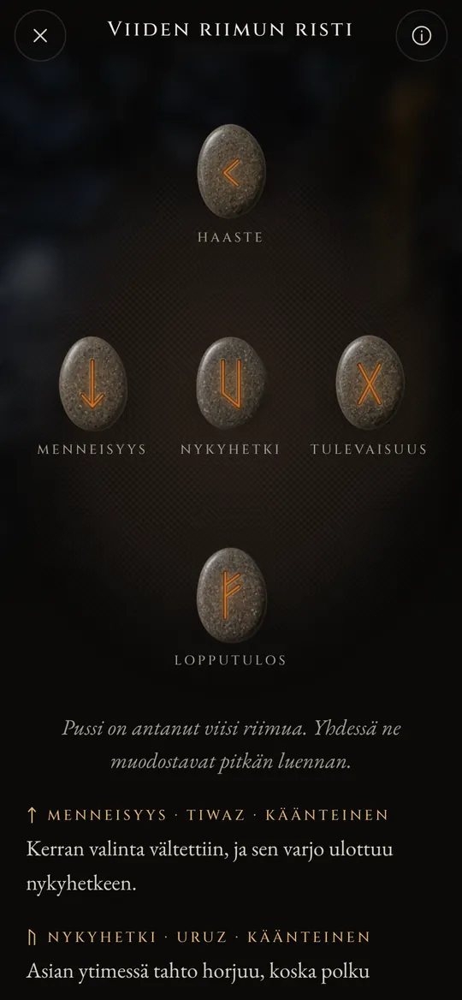

Riimuluentoja kohtalon kaivolta.
Heitä Elder Futhark, lue mitä putoaa vanhojen runojen äänellä ja anna yön äänten kantaa sinut uneen.
Kolme naista istuu kaivolla
Vanhoissa pohjoismaisissa runoissa kolme Nornia istuu kaivolla Yggdrasilin, maailmanpuun, juurella. He kastelevat sen juuria, veistävät sauvoja ja määräävät jokaisen syntyvän elämän. Vanhin heistä on Urd. Hänen nimensä tarkoittaa sitä, mikä on jo tapahtunut, ja kaivo on nimetty hänen mukaansa.
Urdloom on saanut nimensä hänestä ja kangaspuista, joilla kohtalon sanottiin kutoutuvan. Sovellus vaalii tuota tunnelmaa: kivipussi kädessäsi, liina lattialla ja luennat, jotka on kirjoitettu saagojen eikä horoskoopin äänellä.

Sieltä tulevat neidot, paljon tietävät, kolme järvestä puun alta.Völuspá, säkeistö 20
Pidä, ravista, päästä irti
Pidä pussia, niin kivet kalisevat kädessäsi. Päästä irti, niin ne lentävät liinalle, vierivät, asettuvat ja kääntyvät yksi kerrallaan. Luenta ilmestyy niiden alle.

Yksi riimu
Yksi kivi edessä olevalle päivälle tai kysymykselle, johon voi vastata kyllä tai ei. Napauta, niin se on heitetty.


Kolmen riimun heitto
Tilanne, toiminta, lopputulos. Lue ne vasemmalta oikealle kuin lyhyt saaga ja sitten kokonaisuutena: päättävä lanka näyttää, miten kaikki kolme puhuvat toisilleen.

Viiden riimun risti
Menneisyys, nykyhetki ja tulevaisuus keskellä vaakarivissä, haaste yläpuolella ja lopputulos alapuolella, ja sinä kaiken sydämessä.




Jokainen luenta on kirjoitettu käsin: kaksikymmentäneljä riimua, jokainen pari ja kaikki 2 024 kolmen riimun yhdistelmää, jokaisella kahdellakymmenelläkahdella kielellä. Mitään ei tuoteta sillä aikaa, kun odotat.

Kaksikymmentäneljä riimua
Elder Futhark on vanhin riimuaakkosto, jota kaiverrettiin suunnilleen 100-luvulta 700-luvulle. Sen kaksikymmentäneljä merkkiä jakautuvat kolmeen kahdeksan merkin perheeseen, joita kutsutaan ætteiksi. Kukin on nimetty sen jumalan mukaan, jonka riimu on ensimmäisenä. Kosketa kiveä lukeaksesi sen.
Freyrin ætt
Hagalin ætt
Tyrin ætt
Riimujen nimet säilyvät vanhassa muodossaan kaikilla kielillä. Ne ovat itse merkkien nimiä, jotka tutkijat ovat rekonstruoineet riimurunoista ja vanhimmista aakkostoista.
Riimujen lyhyt historia
Riimut ovat ennen kaikkea kirjaimia. Germaaniset kansat kaiversivat niitä puuhun, luuhun, metalliin ja kiveen noin puolentoista tuhannen vuoden ajan. Näin merkit ja vanha arvanheiton tapa ovat tulleet meille asti.

Arpoja valkoisella liinalla
Roomalainen historioitsija Tacitus kirjoittaa, että germaanit leikkaavat hedelmäpuun oksan säleiksi, merkitsevät ne merkeillä ja sirottelevat ne valkoiselle liinalle. Pappi tai talon päämies nostaa niistä kolme, yhden kerrallaan, ja tulkitsee ne. Hän ei sano merkkien olleen riimuja, mutta ele on sama, jota Urdloom vaalii.
Ensimmäiset riimukirjoitukset
Tanskan Vimosen suosta löydetyssä luukammassa on yksi vanhimmista tunnetuista riimukirjoituksista, yksi ainoa sana: harja. Samoilta vuosisadoilta peräisin olevat keihäänkärjet, soljet ja amuletit osoittavat, että kirjoitus oli jo levinnyt koko pohjoiseen.
Koko rivi yhdessä kivessä
Gotlannista löytyneeseen Kylverin kiveen joku kaiversi kaikki kaksikymmentäneljä merkkiä järjestyksessä. Se on vanhin säilynyt täydellinen futhark. Rivi on saanut nimensä kuudesta ensimmäisestä kirjaimestaan: f, u, th, a, r, k.
Kultaiset sarvet
Toisessa Tanskan Gallehusin kahdesta kultaisesta sarvesta on alkusointuinen säe: Minä, Hlewagastiz, Holtin poika, tein sarven. Se on yksi varhaisimmista runosäkeistä millään germaanisella kielellä.
Kuusitoista merkkiä viikinkiajalle
Skandinaviassa aakkosto supistuu kuuteentoista merkkiin, nuorempaan futharkiin. Sen kirjaimin pystytetään tuhansia muistokiviä, muiden muassa Tanskan Jellingin suuret kivet.
Runot kirjoitetaan muistiin
Islantilaiset kirjurit kirjoittavat eddarunot muistiin. Völuspássa Nornit istuvat Urdin kaivolla; Hávamálissa Odin riippuu yhdeksän yötä tuulen piiskaamassa puussa ja nostaa riimut huutaen.
Säe jokaiselle riimulle
Norjan ja Islannin riimurunot sekä vanhempi anglosaksinen riimuruno antavat jokaiselle riimulle lyhyen säkeen: karja tuo riitaa sukulaisten kesken, rae on kylmintä viljaa, jää on hyvin liukas. Suuri osa siitä, mitä riimujen merkityksistä tiedetään, on peräisin näistä säkeistä.
Luetaan jälleen
Riimujen käyttö pohdiskeluun on nykyaikainen herätys, joka nojaa noihin runoihin ja Eddojen kuviin. Urdloom seisoo avoimesti tässä perinteessä: se ei väitä olevansa muinainen oraakkeli, vaan haluaa vain lukea vanhoja merkkejä huolella.

Muinaisia ääniä ja taajuuksia unta varten
Kun päivä on päättynyt, vaeltaja astuu ulos tähtien alle. Valitse sävel, lisää sen päälle ääniä ja aseta ajastin. Äänet soivat näytön ollessa pimeänä ja hiipuvat itsestään.
Kolme säveltä: Urdin lähde, Ajan langat ja Vaeltajan tie, rakennettuina kurkkulaulun, kehysrummun ja jousella soitetun tagelharpan varaan.
Kuusi sekoitettavaa kerrosta, kullakin oma voimakkuutensa: tulisijan tuli, yötuuli, kaukainen vesi, syvät sävyt, sade metsässä ja korpit.
Jokainen ääni on tehty Urdloomia varten. Mitään ei soiteta internetistä.
Pieniä asioita, joilla on väliä
- Riimu joka aamu
- Ensimmäisellä näytöllä odottaa yksi kivi kuvapuoli alaspäin. Halutessasi lyhyt viesti kertoo sinulle joka aamu, mikä riimu sinulle on nostettu.
- Päiväkirja
- Säilytä luennat, jotka puhuttelevat sinua, yhdessä esittämäsi kysymyksen kanssa.
- Jaettavat luennat
- Lähetä luenta kuvana: kivet sellaisina kuin ne putosivat ja sanat niiden alla.
- Kaksikymmentäkaksi kieltä
- Jokaisen ovat kirjoittaneet ja tarkistaneet ihmiset, jotka lukevat sitä, ja kirjasimen ja koon voit vaihtaa itse.
Mitä täällä tapahtuu, jää tänne
Urdloom toimii ilman internetiä. Siinä ei ole tiliä, rekisteröitymistä eikä mainoksia, eikä se sisällä minkäänlaista analytiikkaa tai seurantaa. Kysymyksesi, luentasi ja päiväkirjasi pysyvät puhelimessasi.
YksityisyysKysymyksiä
Ennustaako Urdloom tulevaisuuden?
Ei. Luennat on tarkoitettu pohdiskeluun ja kulttuuriseen kiinnostukseen. Ne osoittavat suuntaa, kuten vanhat riimut tekivät, ja merkitys muotoutuu omassa elämässäsi. Mikään sovelluksessa ei ole lääketieteellistä, taloudellista, oikeudellista tai muuta ammatillista neuvontaa.
Miksi kieli kuulostaa vanhalta?
Riimut ovat peräisin runojen, saagojen ja arvoitusten maailmasta. Kirjoitimme luennat tarkoituksella tuolla äänellä ja pysyimme jokaisella kielellä niin lähellä riimuperinnettä kuin pystyimme.
Tarvitsenko internetyhteyden?
Et. Kaikki luennoista yön ääniin on sovelluksen sisällä.
Mitä kieliä on saatavilla?
Englanti, turkki, saksa, ranska, espanja, italia, portugali, venäjä, ukraina, puola, hollanti, ruotsi, norja, suomi, kreikka, arabia, hindi, indonesia, japani, korea, kiina ja albania.
Kirjoita meille
Kysymykset, sana, joka kuulostaa väärältä omalla kielelläsi, tai luenta, joka jäi mieleesi: luemme jokaisen viestin.
support@urdloom.app